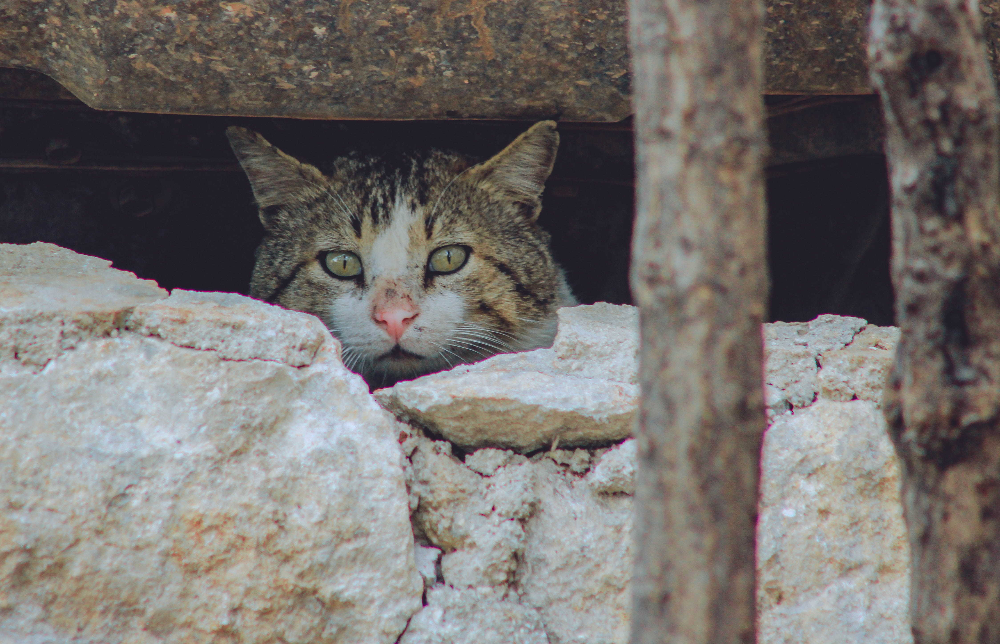
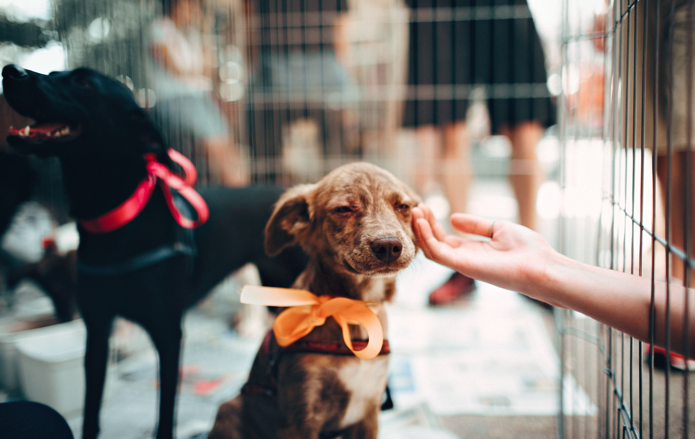

We must end Shelters that kill now!!
No government institution or animal organization is responsible for tabulating national statistics for the animal protection movement. These are national estimates. Figures may vary from state to state. Each year, approximately 1.5 million dogs and cats are killed every year because shelters are too full and there aren't enough adoptive homes. The number of dogs and cats euthanized in U.S. shelters annually has declined from approximately 2.6 million in 2011.

These are horrifying numbers to think about. To put it into prospective, There are 1.5 million people living in the city of Philadelphia. Imagine if each year the city of Philadelphia was destroyed killing all its inhabitants, it's a horrifying thought. That happens every year to animals in shelters that euthinize them to make space for more.
We here at Best Friends Animal Society are 100% against the killing of our fury friends. You may be thinking to yourself, but what if one of your shelters fills up, What will you do then. The answer for us is simple. If we can't give the animal a new family, we send them to our family in our original location where we have plenty of space for them. We have workers here who take care of them and attempt to find them a new home in a different location.
So help us achieve our ultimate goal of ending the killing of our furry friends. We do not want to close the shelters that do practice this but rather provide an alternative. If you would like to help, any donation would help, all volunteers are welcome, and hey, maybe you'll come to love one of the animals and take them home with you.